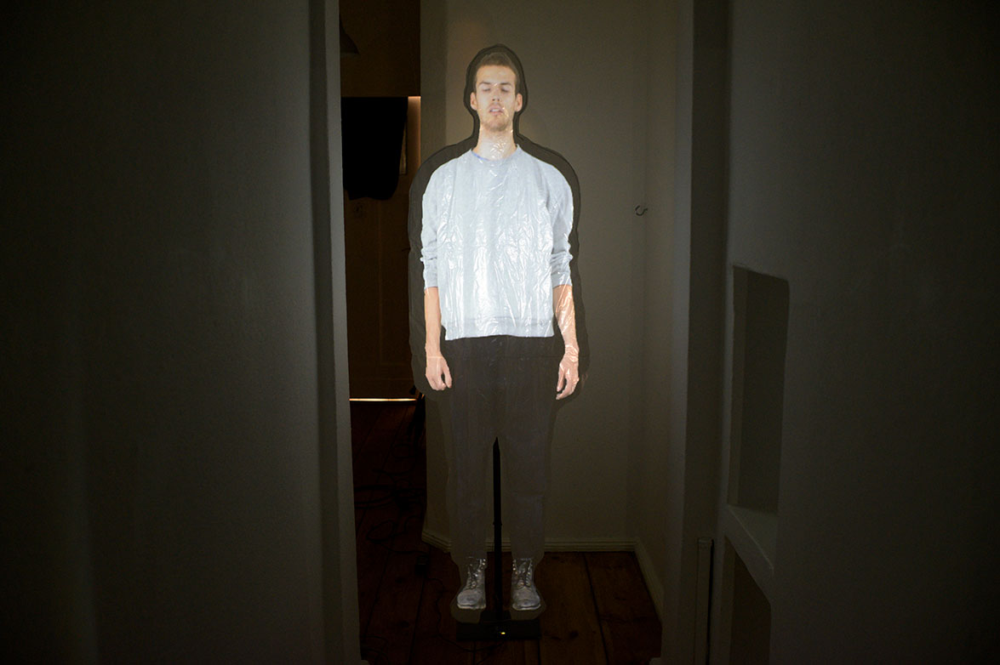

About

-
Zeno Gries (geboren 1993 in Berlin) lebt und arbeitet in Berlin.
2015 - 2020
Expandend Cinema an der HGB bei Clemens von Wedemyer2013 - 2015
Medienkunst an der HGB Leipzig -
Zeno Gries (born 1993 in Berlin) lives and works in Berlin.
2015 - 2020
Expandend Cinema at the Academy of Visual Arts Leipzig with Clemens von Wedemyer2013 - 2015
Medienkunst at the Academy of Visual Arts Leipzig
Ausstellungen / Exhibitions:
- 2018 I AM (NOT) YOUR TOOL, Kunstraum 53, Hildesheim
- 2018 Hungry Eyes Festival, Alte Universitätsbibliothek, Gießen
- 2017 The Soft Animal of your Body, HGB Festsaal, Leipzig
- 2015 Leisure Time - Lassen Sie sich nicht aus der Ruhe bringen, Kunstraum E, Leipzig
- 2015 Works on Paper III, Momentum Worldwide, Kunstquartier Bethanien, Berlin
- 2015 Jubeljahre, Tapetenwerk<, Leipzig
- 2014 Es ist Frühling, Galerie KUB, Leipzig